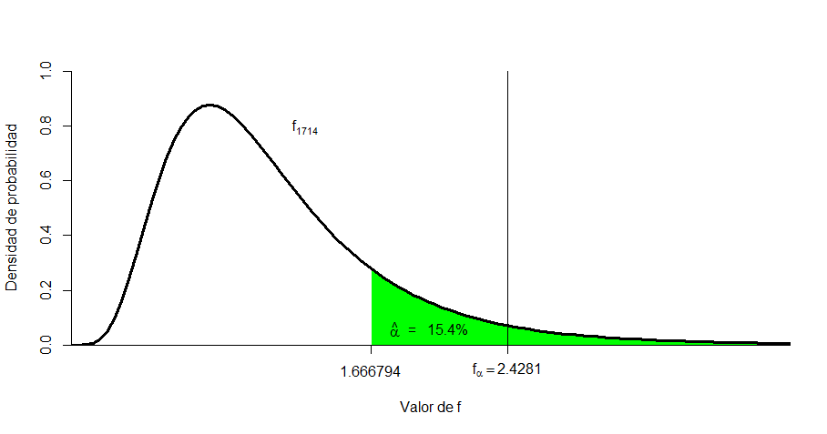

Code
1-pf(1.666794,17,14)[1] 0.169704Se desea contrastar si un tratamiento cambia el contenido medio de fosforo en el suelo. Se necesita saber si el contenido del elemento difiere entre dos parcelas experimetales. En cada parcela, marcadas como 1 y 2 se toman varias lecturas y se obtienen los siguientes valores:
Asuma que se contrastará la hipótesis de que el contenido de fósforo presenta un aumento significativo en la región 1. El juego de hipótesis a contrastar tiene la forma:
\[ H_0: \mu_1 \le \mu_2 \;\;\; \leftrightarrow \;\;\; H_0:\mu_1 - \mu_2 \le 0\]
\[H_a: \mu_1 \gt \mu_2 \;\;\; \leftrightarrow \;\;\; H_a:\mu_1 - \mu_2 \gt 0\]
Primero se contrasta la hipótesis de heterocedasticidad
\[ H_0: \sigma^2_1 = \sigma^2_2 \;\;\; \leftrightarrow \;\;\; H_0: \frac{\sigma^2_2}{\sigma^2_1} =1\]
\[H_0: \sigma^2_1 \ne \sigma^2_2 \;\;\; \leftrightarrow \;\;\; H_0: \frac{\sigma^2_2}{\sigma^2_1} \ne 1\]
Se calcula el estadístico de prueba para el cociente de varianzas …
\[F_c=\frac{S_2^2}{S_1^2}=\frac{0.5967647}{0.3580314}=1.666794\]
Para este contraste el valor de la significancia observada es:
\[\hat\alpha=0.169704\]
1-pf(1.666794,17,14)[1] 0.169704Por lo que se puede inferir que no hay evidencia de Heterocedasticidad (\(\hat\alpha=0.169704\)).
Note que si se fija un nivel de significancia, \(\alpha=0.05\), el valor del percentil teórico crítico es \(f_{17;14;0.95}=2.428179\) y, con esto, \(F_c<f_{17;14;0.95} \;\;\) lo que también lleva a declarar, con un nivel de significancia del 5%, que no hay evedencia de heterocedasticidad.
qf(.95,17,14)[1] 2.428179
Ahora pasamos al contraste de hipótesis para la diferencia de medias.
\[ t_c =\frac{\bar x_1- \bar x_1}{\sqrt{S_p^2(\frac{1}{n_1}+\frac{1}{n_2}) } }=\frac{3.358- 2.4833}{\sqrt{0.2444596(\frac{1}{18}+\frac{1}{15}) } }=3.577959 \] A este estadígrafo se el asocian 31 grados de libertad, por lo que se estima el valor de la significancia observada en :
\[\hat \alpha=P(t_{31} \gt t_c )=P(t_{31} \gt 3.577959)=0.0005809866\]
1-pt(3.577959,31)[1] 0.0005809866contraste.f <- function(y1,y2){
n1<- length(y1)
varianza <- var(y1)
n2<- length(y2)
varianza2 <- var(y2)
ifelse(varianza>varianza2, FCal <- varianza/varianza2, FCal <- varianza2/varianza)
ifelse(varianza>varianza2, gl1 <- length(y1)-1, gl1 <- length(y2)-1)
ifelse(varianza>varianza2, gl2 <- length(y2)-1, gl2 <- length(y1)-1)
alpha.gorro.f<- 1 - pf(FCal,gl1,gl2)
return(alpha.gorro.f)
}
contraste.t <- function(y1,y2){
media1 <- mean(y1); n1<- length(y1)
varianza <- var(y1)
media2 <- mean(y2); n2<- length(y2)
varianza2 <- var(y2)
ifelse(contraste.f(y1,y2)< 0.05,
EE.d.diferenc <- sqrt(varianza/length(y1) + varianza2/length(y2)),
EE.d.diferenc <- sqrt(((varianza*(n1-1)+varianza2*(n2-1))/(n1+n2-2))*(1/n1 + 1/n2))
)
ifelse(contraste.f(y1,y2) > 0.05, v<- n1+n2-2,
truc(v <- (varianza/n1+varianza2/n2)^2/(((varianza/n1)^2/(n1-1))+((varianza2/n2)^2/(n2-1))))
)
tc <- (media1-media2)/EE.d.diferenc
p <- pt(tc,v)
result <- data.frame(M1=media1, M2=media2,Varianza=varianza,Varianza2=varianza2, alpha.gorro.F = contraste.f(y1,y2), EE.d.diferenc = EE.d.diferenc, tc = tc, v = v, Acumulado.de.t = p, dif.crit = qt(0.95,v)*EE.d.diferenc)
return(result)
}
y1 <- c(2.4, 3.9, 3.3, 2.5, 2.9, 4.07, 3.9, 4, 3.1, 4.2, 3.6, 3.6, 2.7, 3.4, 2.8)
y2 <- c(1.2, 1.9, 2.2, 2.2, 4.4, 2.7, 2.6, 2.8, 2.5, 2.3, 1.4, 1.3, 3.4, 2.6, 3.2, 2.9, 2.6, 2.5)
R <- contraste.t(y1,y2)Al comparar el nivel de significancia propuesto en 5% contra el nivel se significancia observado, se concluye que el contenido medio de fósforo difiere significativamente entre las parcelas (Nivel de significancia observado, \(\hat\alpha\)= 0.000581).
Note que si se fija el nivel de significancia en el 5% (\(\alpha=0.05\)), el valor del percentil teórico crítico es \(t_{\alpha;31}=t_{0.05;31}= 1.695519\) y cuando se compara con el valor de t calculado:
\[¿ t_c >t_{\alpha} ?\]
\[3.577959 > 1.695519\]
Entonces se cuenta con evidencia para rechazar \(H_0\), con un nivel de significancia del 5%: el tratamiento aplicado a la parcela experimental 1 aumenta el contenido de fósforo en el suelo (Nivel de significancia observado, \(\hat\alpha\)= 0.000581).